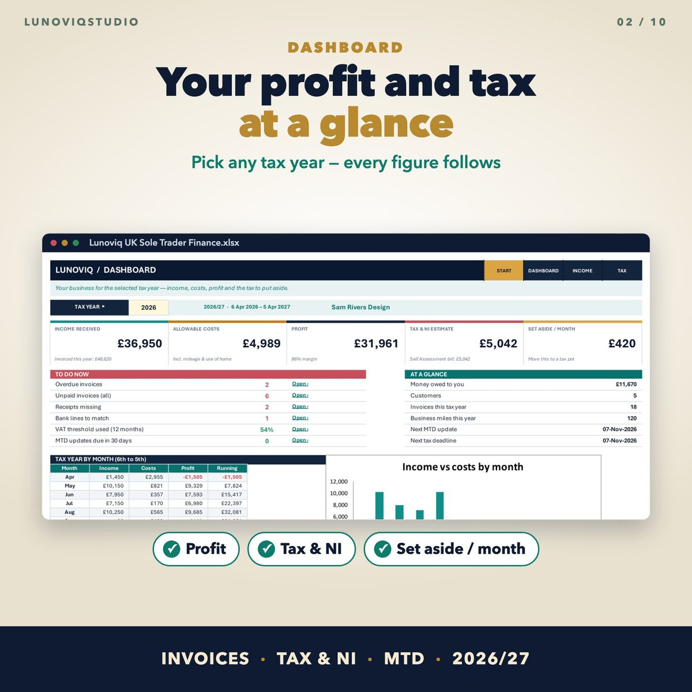
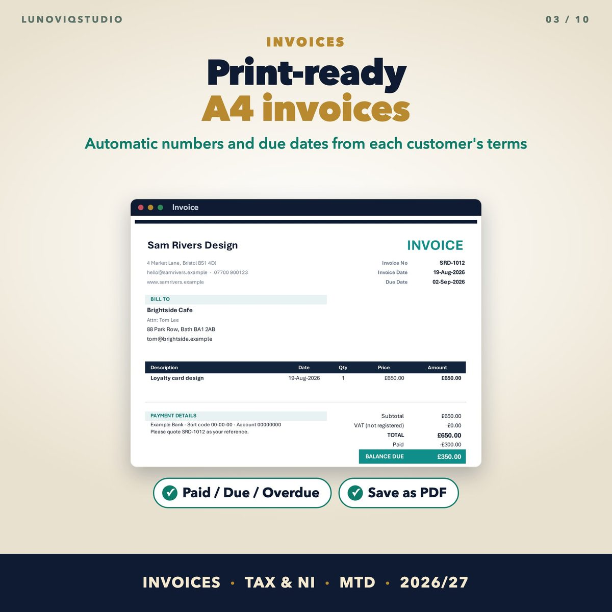
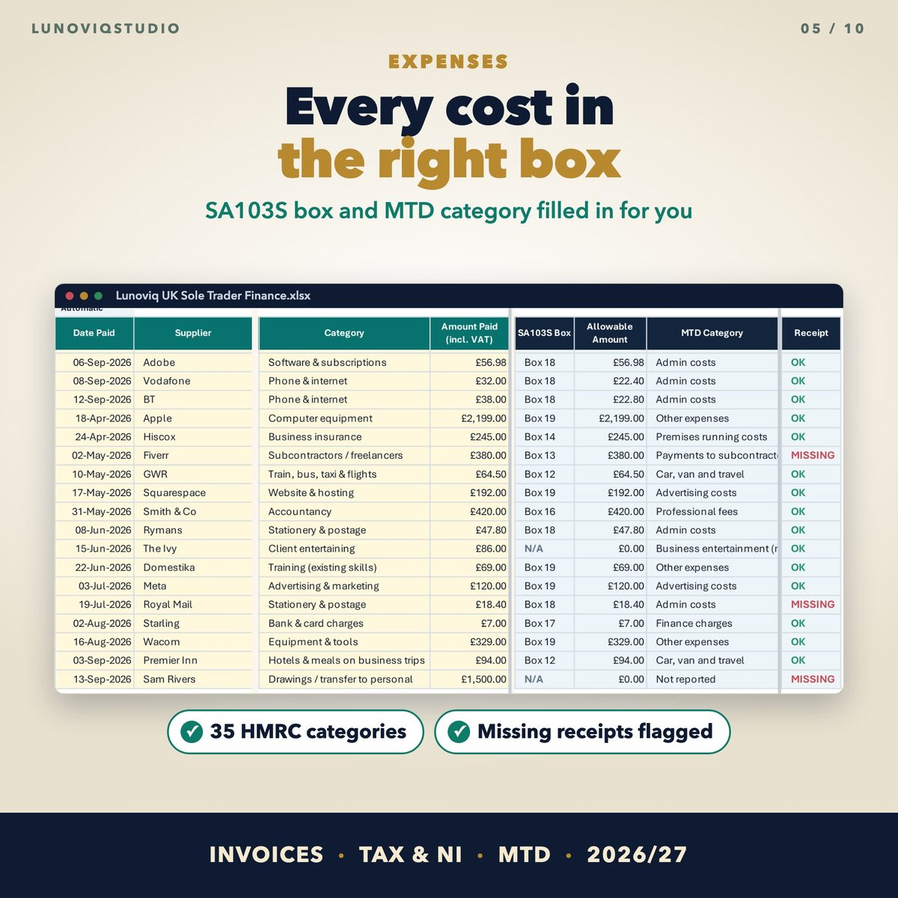
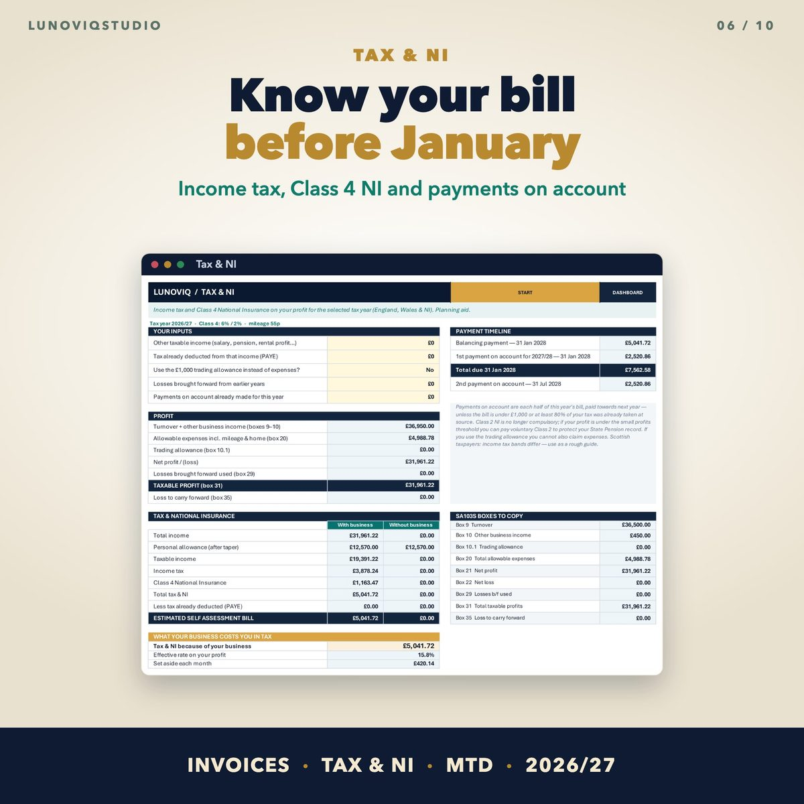

Home › Spreadsheets › UK Sole Trader Spreadsheet 2026/27
UK Sole Trader Spreadsheet 2026/27
Invoices, expenses, mileage, income tax, National Insurance, VAT and Making Tax Digital for self-employed people in the UK.
Made for: Sole traders and freelancers in the UK who file a Self Assessment return.
Get it on EtsyWhat it doesWhat it does
Dashboard
Income, allowable costs, profit, tax and NI estimate, how much to set aside each month, overdue invoices and missing receipts.
Invoices
Automatic invoice numbers, due dates from each customer's terms, part payments and a print-ready A4 invoice.
Expenses in the right box
35 categories mapped to SA103S boxes and MTD categories, business-use % for mixed costs and VAT handled either way.
Mileage and use of home
HMRC flat rates: 55p a mile for 2026/27, 25p after 10,000 miles; £10 / £18 / £26 a month for working from home.
Tax and NI
Income tax and Class 4 NI on your profit, other income and PAYE, the trading allowance option, losses and payments on account.
MTD and VAT
Cumulative quarterly figures with the update deadlines, and rolling 12-month turnover against the £90,000 VAT threshold.
See it




What you get
- Blank Excel workbook (17 linked sheets)
- Sample workbook
- Google Sheets version (copy link in the guide)
- User guide PDF
Instant download. One-off price, no subscription, no macros.
Questions
Does it file my tax return?
No. It works out the figures and shows which SA103S box each one goes in. You enter them on your return or in your MTD software.
Do I need to be VAT registered?
No. If you are not registered, leave the VAT column blank and you claim the full amount.